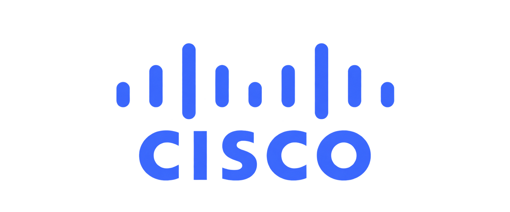
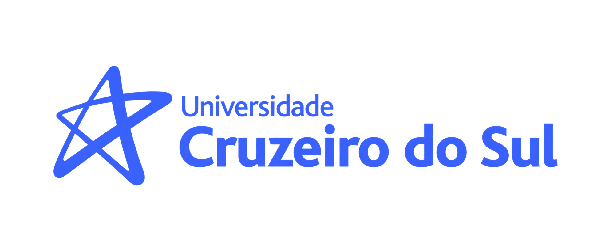
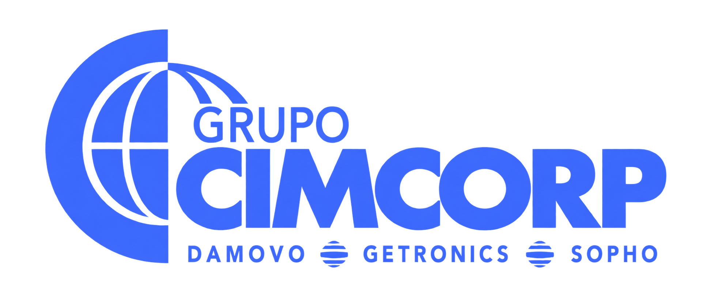
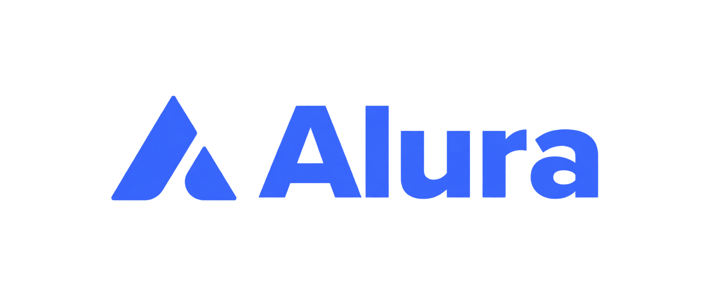
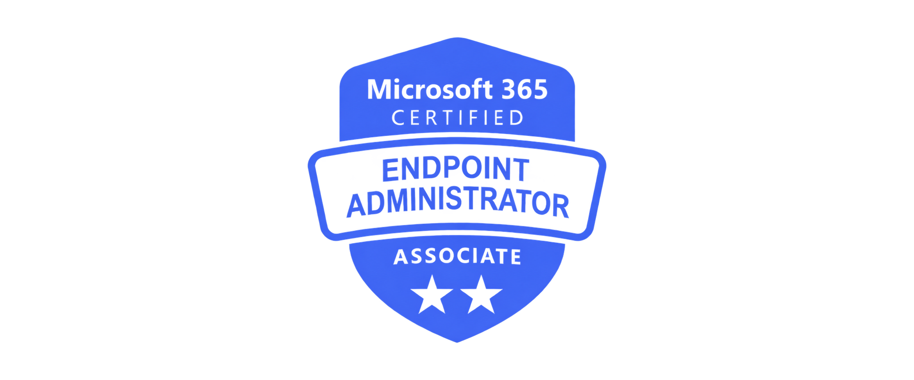
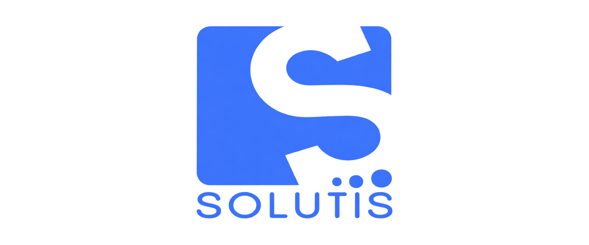
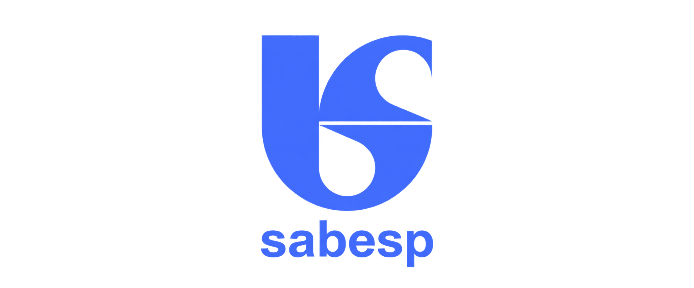
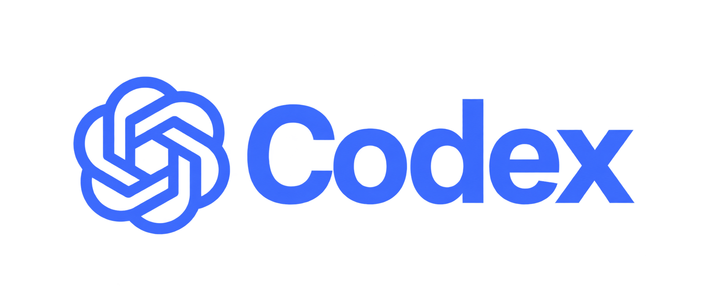
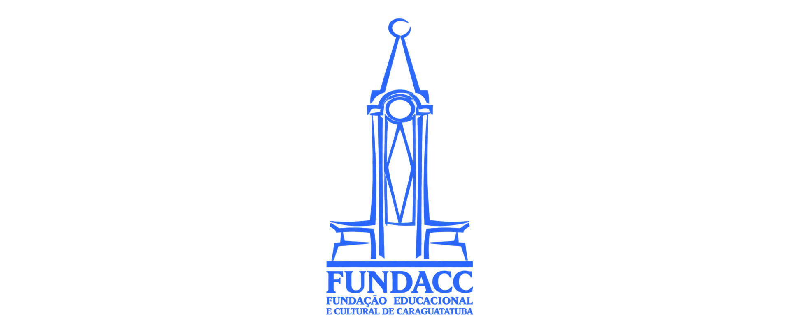
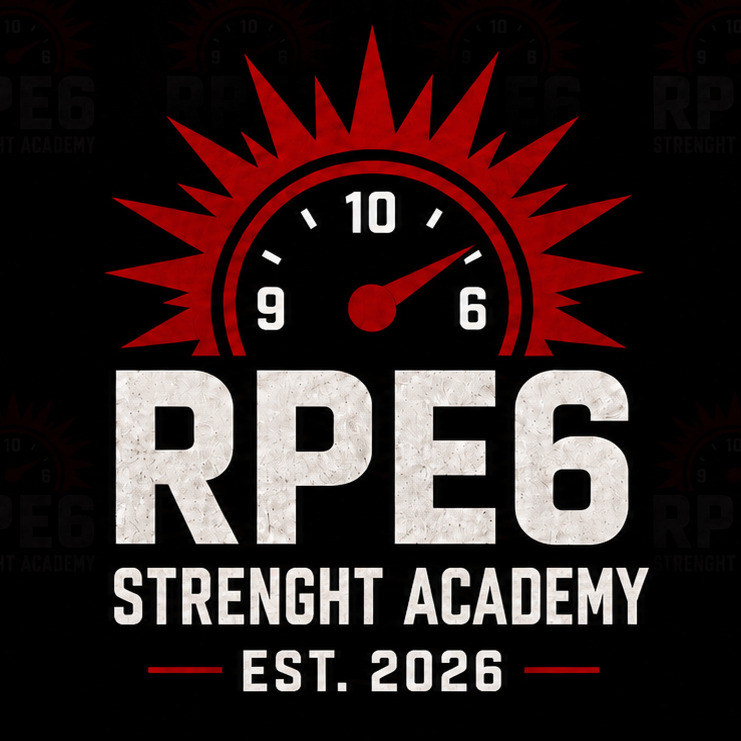

Suporte técnico
Manutenção, montagem e apoio para recursos de TI mais organizados.
Atuação em suporte técnico, infraestrutura e redes, operação administrativa, atendimento, gestão de serviços de TI, criação de conteúdo e soluções web.









Cuido da tecnologia que sustenta a rotina, do suporte e da infraestrutura à organização operacional. Também crio conteúdo e soluções web com clareza e atenção aos detalhes.
Manutenção, montagem e apoio para recursos de TI mais organizados.
Conectividade, ambientes corporativos e rotinas de rede local.
Processos, documentos, controles e organização do trabalho diário.
Orientação e resolução prática de necessidades de pessoas e equipes.
Práticas de gerenciamento, organização de demandas e criação de valor.
Uso prático de LLMs e programação assistida por IA para organizar, criar e iterar soluções.
Atuação terceirizada em TI na Sabesp. Manutenção de micros, montagem, suporte externo, suporte a rede, helpdesk e atendimento a ambiente corporativo.
Atuação terceirizada em TI na Sabesp. Manutenção de micros, montagem, suporte externo, suporte a rede, helpdesk e atendimento a ambiente corporativo.
Recebimento de mercadorias e jornais, reparte e logística de entregas de mercadorias e jornais, controle de estoque, roteirização de entrega e manutenção de informática.
Manutenção de micros, montagem, venda, suporte externo, suporte a rede, helpdesk e eventuais atendimentos ao público.
Manutenção e administração de micros e rede local do museu, edições e criações de vídeos, artes gráficas e eventuais atendimentos ao público.
Gerenciamento do RH, conferência de ponto e pagamento, atendimento aos condôminos, acordo de dívidas, arquivo de documentos e utilização do sistema CredMax.
Atendimento aos clientes, abertura de contas, pesquisas e ordens de pagamento do FGTS, venda de seguros e títulos de capitalização.
Escola Estadual Colônia dos Pescadores — conclusão em 2006.
Universidade Cruzeiro do Sul — conclusão em 2014.
Universidade Cruzeiro do Sul — não concluído.
Atuação estratégica no gerenciamento integrado de produtos e serviços.
Protegendo você e sua empresa contra ameaças cibernéticas.
Conhecendo as 4 dimensões
Hábitos e práticas para o dia a dia
Descobrindo as práticas de gerenciamento de serviços
Da produtividade às metas pessoais
Conhecendo os conceitos-chave para gerenciamento de serviços
Apresentando o sistema de valores de serviço
Otimizando a qualidade dos resultados
Endpoint Administrator Associate
Módulos I e II
Fundamentos do sistema operacional e uso de linha de comando
Recursos avançados do sistema operacional e configurações de ambiente
Triagem, acompanhamento de demandas, organização de filas e orientação a usuários.
Suporte a Windows, computadores, periféricos, instalações, configurações e atualizações.
Rotinas de acesso, autenticação multifator e uso de Active Directory em ambiente corporativo.
Suporte a Microsoft 365, Outlook e softwares de uso corporativo, incluindo Autodesk.
Redes locais, conectividade e suporte técnico em ambientes corporativos.
Preparação e movimentação de equipamentos, suporte presencial e organização operacional.
Consulta, aplicação e registro de orientações, procedimentos e bases de conhecimento.
Edição de vídeo e áudio no Adobe Premiere Pro.
Edição de imagens e produção de materiais no Canva.
Prática com LLMs, ChatGPT desde o lançamento, Grok, Gemini e NotebookLM. Uso de versões iniciais do Stable Diffusion no PC, por volta de 2020.
Desenvolvimento e iteração de soluções em código com vibe coding e uso do Codex.
Experiência em três projetos de canais no YouTube e produção para Instagram e outras redes sociais.

Uma landing page pensada para colocar método entre o atleta e a próxima barra: apresenta a RPE6 Strength Academy, organiza os módulos e transforma periodização, técnica e competição em uma proposta de acesso clara. O trabalho foi entregue em uma página, desenvolvida em cerca de 5 dias, com investimento total de R$ 700. Os criativos foram fornecidos pelo proprietário.
Visitar site ↗Uma presença digital que conecta a Essentia Health às marcas NeuroFlash e Obsidian, combinando narrativa institucional, experiências de produto e caminhos claros de contato. As seis páginas foram desenhadas e produzidas de ponta a ponta, inclusive todos os criativos, em cerca de 20 dias, com investimento total de R$ 1.500.
Visitar site ↗Peças cobradas separadamente.
Domínio, hospedagem e serviços externos cobrados separadamente. Projetos especiais sob orçamento.
Experiência em atendimento técnico, organização de demandas, suporte a usuários e documentação operacional.
8 anos de participação no movimento escoteiro.
Carteira de Habilitação de Amador — Arrais (2024).
Atuação como representante comercial e atendente de escritório.